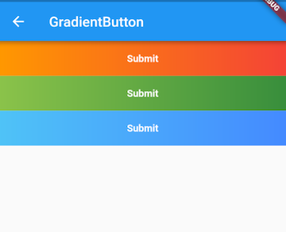

10.2 组合现有组件¶
在Flutter中页面UI通常都是由一些低阶别的组件组合而成，当我们需要封装一些通用组件时，应该首先考虑是否可以通过组合其它组件来实现，如果可以，则应优先使用组合，因为直接通过现有组件拼装会非常简单、灵活、高效。
示例：自定义渐变按钮¶
Flutter Material组件库中的按钮默认不支持渐变背景，为了实现渐变背景按钮，我们自定义一个GradientButton 组件，它需要支持一下功能：
背景支持渐变色
手指按下时有涟漪效果
可以支持圆角
我们先来看看最终要实现的效果（图10-1）：

我们DecoratedBox可以支持背景色渐变和圆角，InkWell在手指按下有涟漪效果，所以我们可以通过组合DecoratedBox和InkWell来实现GradientButton，代码如下：
import 'package:flutter/material.dart';
class GradientButton extends StatelessWidget {
GradientButton({
this.colors,
this.width,
this.height,
this.onPressed,
this.borderRadius,
@required this.child,
});
// 渐变色数组
final List<Color> colors;
// 按钮宽高
final double width;
final double height;
final Widget child;
final BorderRadius borderRadius;
//点击回调
final GestureTapCallback onPressed;
@override
Widget build(BuildContext context) {
ThemeData theme = Theme.of(context);
//确保colors数组不空
List<Color> _colors = colors ??
[theme.primaryColor, theme.primaryColorDark ?? theme.primaryColor];
return DecoratedBox(
decoration: BoxDecoration(
gradient: LinearGradient(colors: _colors),
borderRadius: borderRadius,
),
child: Material(
type: MaterialType.transparency,
child: InkWell(
splashColor: _colors.last,
highlightColor: Colors.transparent,
borderRadius: borderRadius,
onTap: onPressed,
child: ConstrainedBox(
constraints: BoxConstraints.tightFor(height: height, width: width),
child: Center(
child: Padding(
padding: const EdgeInsets.all(8.0),
child: DefaultTextStyle(
style: TextStyle(fontWeight: FontWeight.bold),
child: child,
),
),
),
),
),
),
);
}
}
可以看到GradientButton是由DecoratedBox、Padding、Center、InkWell等组件组合而成。当然上面的代码只是一个示例，作为一个按钮它还并不完整，比如没有禁用状态，读者可以根据实际需要来完善。
使用GradientButton¶
import 'package:flutter/material.dart';
import '../widgets/index.dart';
class GradientButtonRoute extends StatefulWidget {
@override
_GradientButtonRouteState createState() => _GradientButtonRouteState();
}
class _GradientButtonRouteState extends State<GradientButtonRoute> {
@override
Widget build(BuildContext context) {
return Container(
child: Column(
children: <Widget>[
GradientButton(
colors: [Colors.orange, Colors.red],
height: 50.0,
child: Text("Submit"),
onPressed: onTap,
),
GradientButton(
height: 50.0,
colors: [Colors.lightGreen, Colors.green[700]],
child: Text("Submit"),
onPressed: onTap,
),
GradientButton(
height: 50.0,
colors: [Colors.lightBlue[300], Colors.blueAccent],
child: Text("Submit"),
onPressed: onTap,
),
],
),
);
}
onTap() {
print("button click");
}
}
总结¶
通过组合的方式定义组件和我们之前写界面并无差异，不过在抽离出单独的组件时我们要考虑代码规范性，如必要参数要用@required 标注，对于可选参数在特定场景需要判空或设置默认值等。这是由于使用者大多时候可能不了解组件的内部细节，所以为了保证代码健壮性，我们需要在用户错误地使用组件时能够兼容或报错提示（使用assert断言函数）。